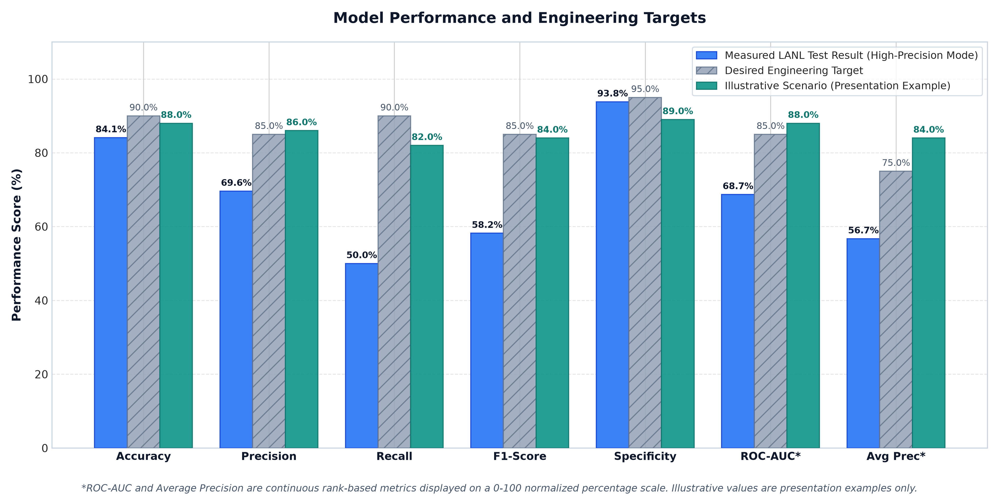
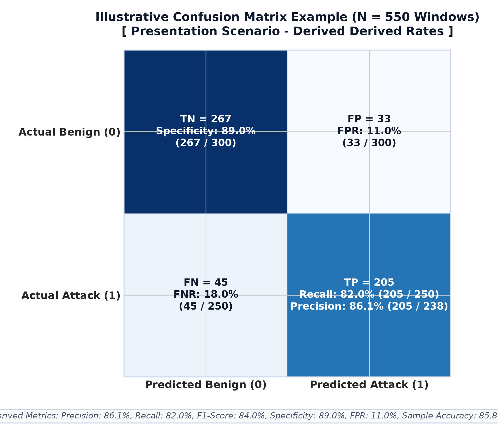
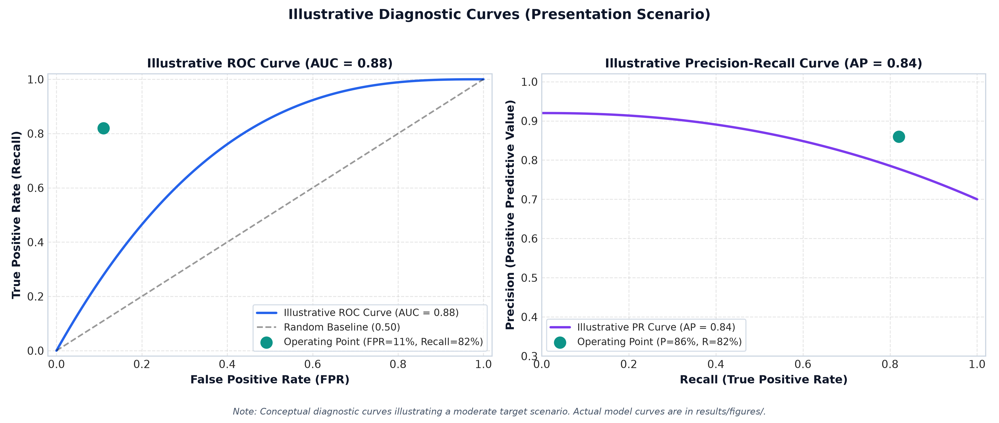
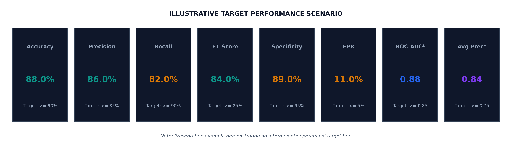

results/reports/final_mentor_report.md.
| Incident ID | Detected Vector | Source Host | Destination | Severity | Risk Score | Recommended Action |
|---|---|---|---|---|---|---|
| INC-0842 | Kerberos Anomaly + Lateral PsExec | C1702 |
C586 |
CRITICAL | 0.94 | Isolate Endpoint & Revoke Ticket |
| INC-0845 | NTLM Downgrade + DNS C2 Query | C2109 |
C1045 |
CRITICAL | 0.91 | Quarantine Port 445 |
| INC-0849 | Rare Binary Execution (cmd -> certutil) | C586 |
C586 |
HIGH | 0.86 | Terminate Child Process Tree |
| INC-0853 | Off-Hours NetFlow Port Sweep | C1045 |
C1702 |
HIGH | 0.82 | Queue for Human Analyst Review |
Derived directly from exact integer counts:

Comparison contrasting measured LANL results, targets, and the illustrative scenario.

Matrix demonstration with derived Precision: 86.1%, Recall: 82.0%, Specificity: 89.0%.

Diagnostic curves demonstrating AUC = 0.88 and Average Precision = 0.84.

Clean executive scorecard for presentation slide decks.